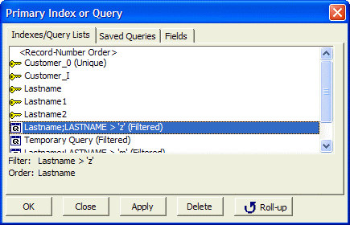
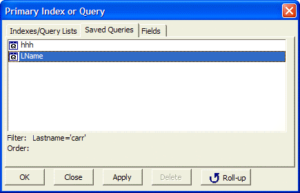
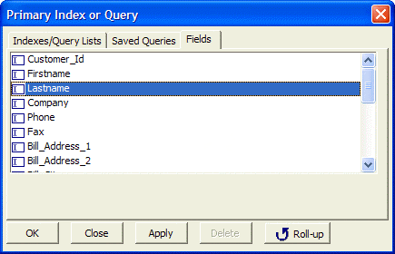

Primary Index or Query Dialog Box - User Manual
Clicking Query > Select Index/Query displays the Primary Index or Query dialog box. The Index/Query Lists tab lists the defined indexes and last four queries run. as you select each index, Alpha Five displays its key expression (Order) and associated filter criteria (Filter).

The Save Queries tab lists any saved queries, which also appear as query operations on the Operations tab of the Control Panel. You can have as many saved queries as you need. as you select each query, Alpha Five displays its key expression (Order) and associated filter criteria (Filter). When you Apply a saved query, it appears on the Indexes/Query Lists tab.

 Note : To remove a
saved query, delete it from the Operations tab
of the Control Panel.
Note : To remove a
saved query, delete it from the Operations tab
of the Control Panel.
The Fields tab lets you select a field. The data will then be ordered by that field.
